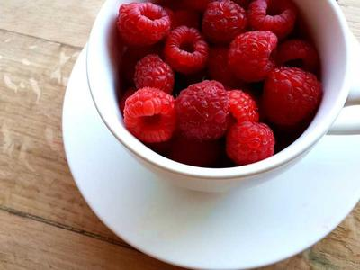

Главная | Вкусняшки | Одежда и стиль | Цветочки | Котики и уют
Вкусная еда всегда поднимает настроение! Особенно свежая выпечка, ягоды, паста и сладкие десерты к кофе.

Идеи для рецептов я часто смотрю на кулинарном портале.